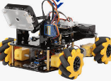
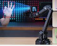
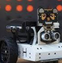
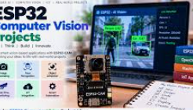

Computer Vision
Capture and process live camera frames using Python and OpenCV.
VJAYA ROBOTICS PROJECT
AI ROBOTICS PROJECTBuild an intelligent vision-based robot using Python, OpenCV, MediaPipe, ESP32 and an L298N motor driver. The computer camera captures visual information, while AI-based vision processing helps control the robot's movement.
Explore ProjectPROJECT OVERVIEW
The AI Vision Robot combines computer vision and robotics to create a robot that responds to visual information captured through a computer webcam.
Python handles the AI vision processing using OpenCV and MediaPipe. The computer communicates with an ESP32 development board through USB serial.
The ESP32 controls an L298N motor driver to move the robot forward, backward, left, right or stop.




WHAT IT CAN DO
Capture and process live camera frames using Python and OpenCV.
Use MediaPipe vision processing to detect and interpret visual information.
Send movement commands from the computer to the ESP32 through USB serial.
Control the robot's DC motors using an L298N motor driver.
Send forward, backward, left, right and stop commands.
Stop robot movement using an emergency stop command and command timeout.
HARDWARE REQUIREMENTS
HARDWARE CONNECTION
| Component | Component Pin | ESP32 / Connection |
|---|---|---|
| L298N | IN1 | GPIO 16 |
| L298N | IN2 | GPIO 17 |
| L298N | IN3 | GPIO 18 |
| L298N | IN4 | GPIO 19 |
| L298N | OUT1 and OUT2 | Motor 1 |
| L298N | OUT3 and OUT4 | Motor 2 |
| L298N | Motor Supply | Suitable external supply |
| ESP32 | GND | Common GND with L298N |
| Computer | USB | ESP32 USB connection |
| Webcam | USB / Computer Camera | Computer |
AI Vision Robot Wiring Diagram
Your actual wiring photograph or diagram will appear here.SOFTWARE REQUIREMENTS
Install the required Python libraries using:
pip install opencv-python mediapipe pyserial numpyHOW IT WORKS
HAND GESTURE CONTROL
The robot is controlled using hand gestures in front of the PC webcam. OpenCV and MediaPipe detect the hand gestures, and Python sends the corresponding movement commands to ESP32.
| Hand Gesture | Robot Movement | Serial Command |
|---|---|---|
| 1 Finger Raised | Forward | FWD |
| 2 Fingers Raised | Right | RIGHT |
| 3 Fingers Raised | Left | LEFT |
| 5 Fingers Raised (Open Palm) | Stop All Motors | STOP |
| Closed Fist | Backward | BACK |
PROGRAM STRUCTURE
Main application entry point.
Project configuration and settings.
Camera and computer vision processing.
Serial communication between computer and ESP32.
PROGRAMMING
Download the AI Vision Robot Python project files.
main.py
Download Code ↓ 📄config.py
Download Code ↓ 📄vision.py
Download Code ↓ 📄serial_link.py
Download Code ↓PROJECT DEMONSTRATION
AI Vision Robot Demonstration
Your actual demonstration video will appear here.IMPORTANT INFORMATION